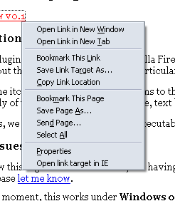
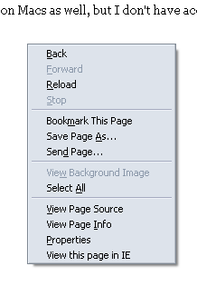
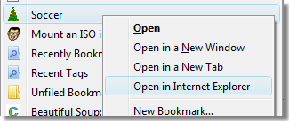
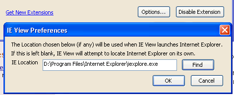
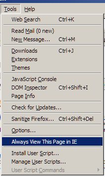
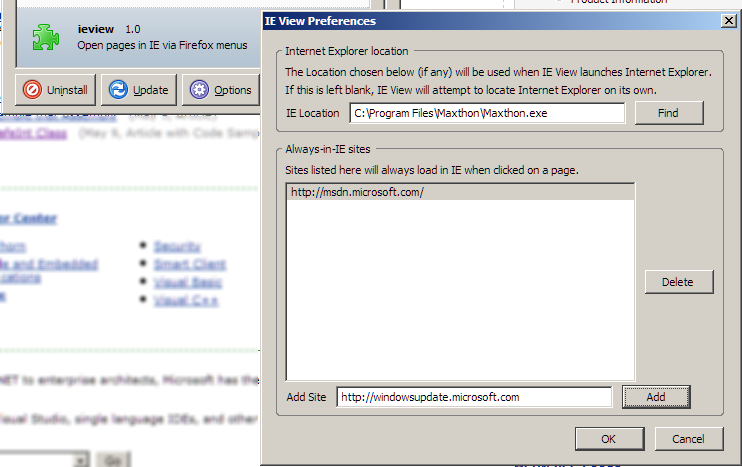

Link context menu

Page context menu

Bookmark context menu
(Firefox 3 and higher only)

Specifying an explicit (or alternate) browser path

Menu item: add the current page to the always-view-in-IE list

Updating the always-view-in-IE list
